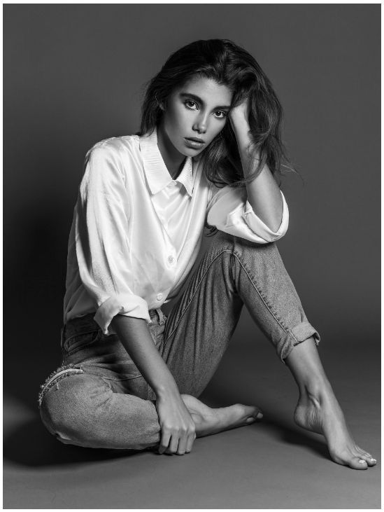
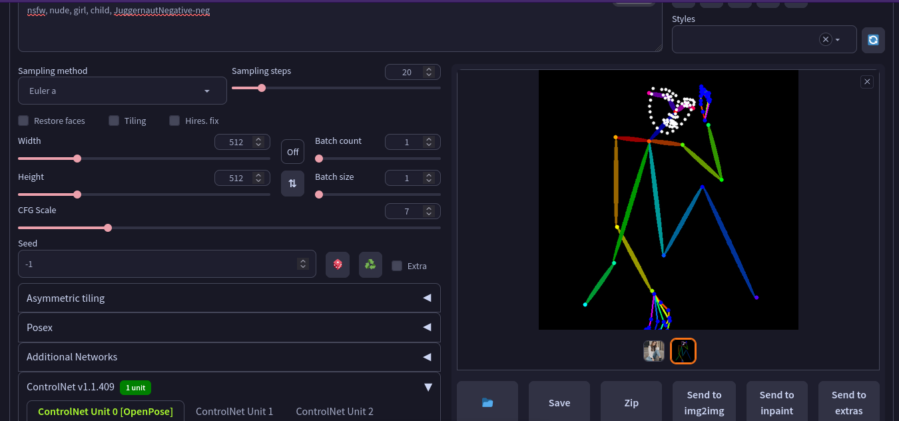
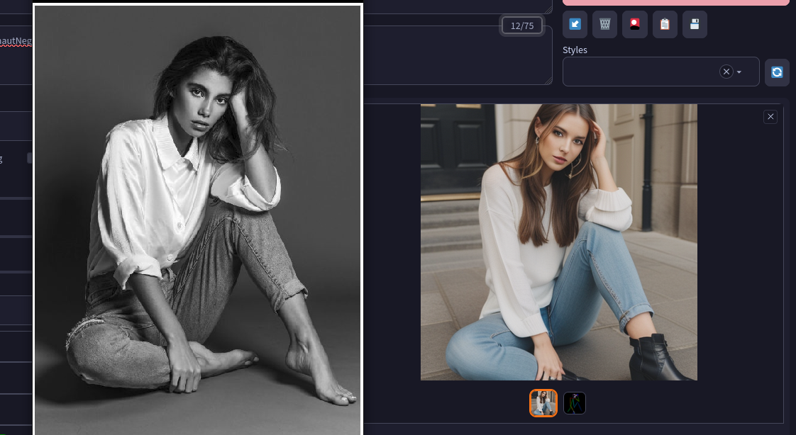
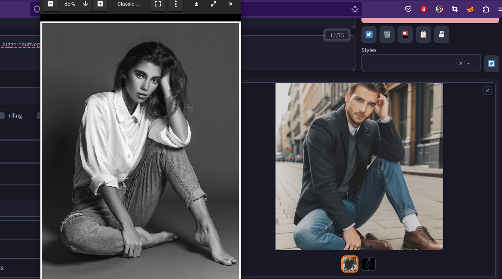
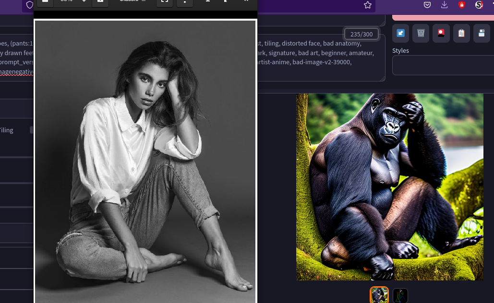

An example of an advanced technique in artificial image generation using Stable Diffusion v1.5 and the OpenPose ControlNet, running on a Python server with an A100 GPU on Google Colab.

Source model for ControlNet

OpenPose ControlNet map

Generated Female Model

Generated Male Model

Generated Gorilla Model